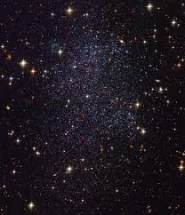

Este telescopio espacial Hubble se puso en órbita el 24 de abril del año 1990 y desde aquel momento registró fenómenos astronómicos inéditos en la historia
Estaba diseñado para durar 15 años, pero el telescopio espacial Hubble lleva más de tres décadas orbitando la Tierra y enviando varias de las imágenes más icónicas de nuestro universo. Durante ese tiempo ha servido como una máquina del tiempo que espía los lugares más recónditos del cosmos.
Gracias a sus observaciones, los astrónomos han visto el nacimiento de estrellas y la creación de agujeros negros. También ha capturado la famosa Gran Mancha Roja de Júpiter, lunas y objetos más allá del sistema solar. El Hubble también es el autor de la fotografía “más profunda” del universo.
Estas imágenes originalmente son en blanco y negro, pero los científicos utilizan varios filtros que dejan pasar ciertas partes de la luz para diferenciar los objetos que emiten esa luz y asignarles colores, según le explica a BBC Mundo Rosa Díaz, astrofísica del Instituto de Ciencia del Telescopio Espacial, la entidad aliada de la NASA encargada de la operación del Hubble. A continuacion, cinco de los hallazgos más importantes de la astronomía que se han logrado con el aporte del poderoso telescopio.